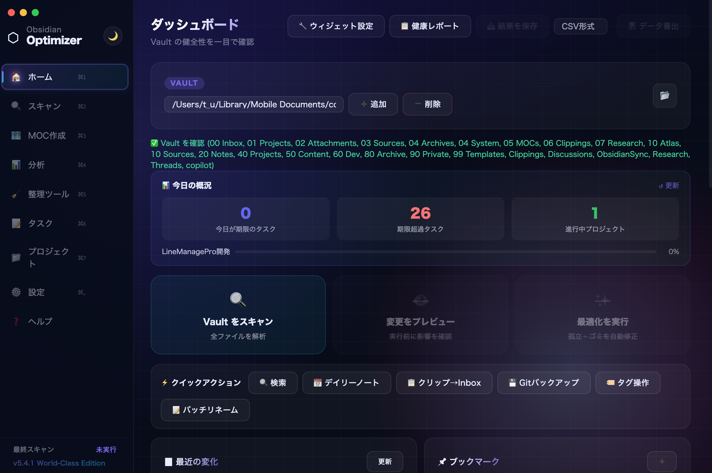
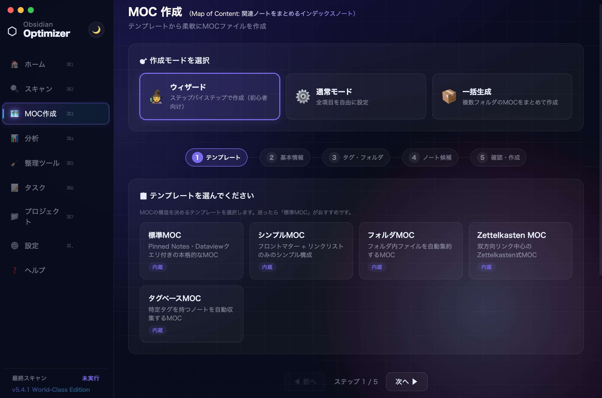
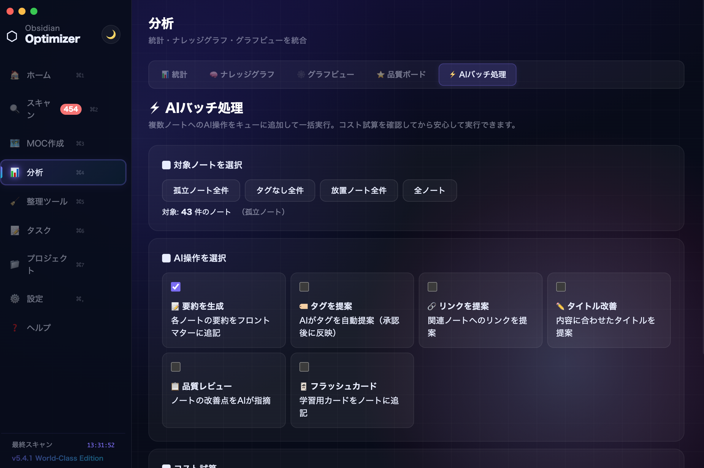
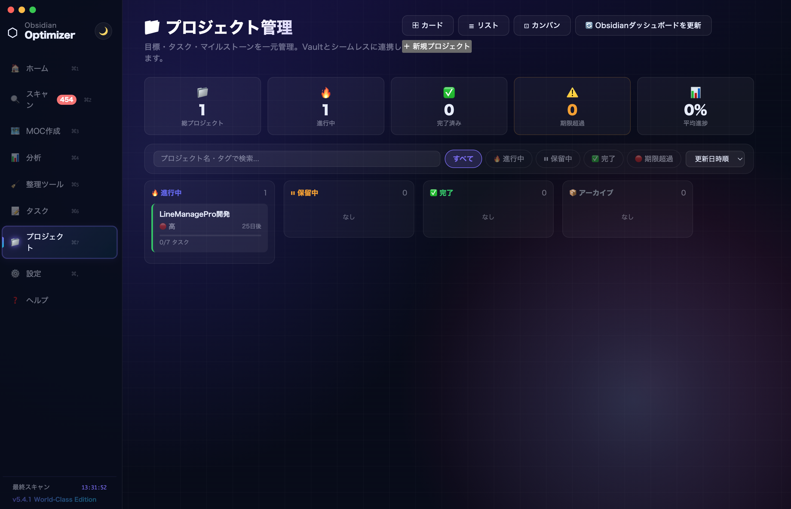
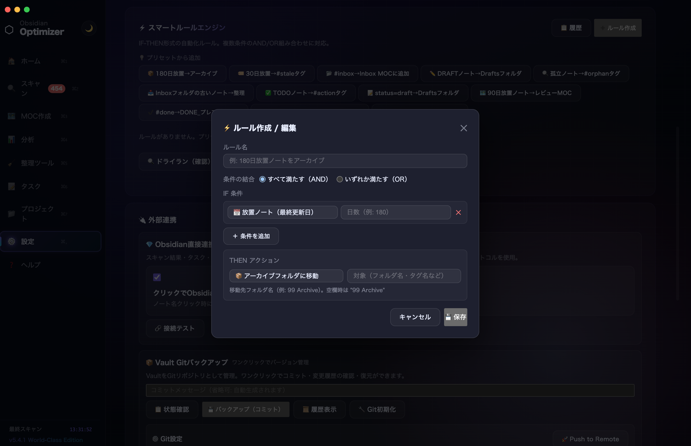
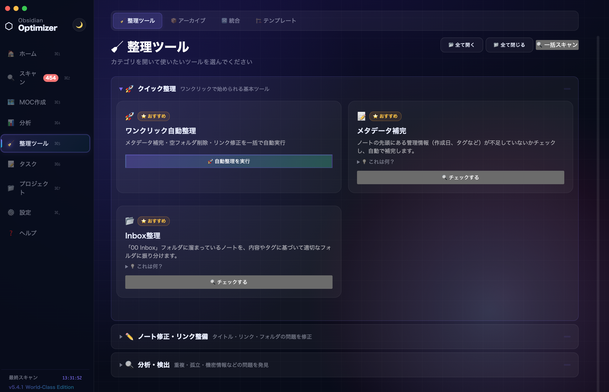
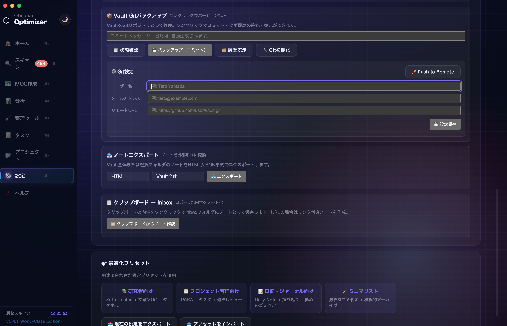

Feature 01
スキャン &
最適化
Vault 全体を深くスキャンし、孤立ノート・ゴミファイル・破損リンクを一括検出。ドライランで影響範囲を確認してから安全に修正できます。
- 孤立ノート・デッドリンクの一括検出
- ゴミファイル・孤立画像の削除
- ドライランモードで安全確認
- 修正前後の差分プレビュー

Feature 02
MOC
自動生成
タグ・フォルダ・テンプレートから MOC（目次ノート）を自動生成。3 ステップのウィザードで初心者でも完成し、既存の MOC をワンクリックで更新できます。
- タグ・フォルダ別 MOC を一括生成
- カスタムテンプレート対応
- 既存 MOC を差分更新
- バッチ生成でまとめて作成

Feature 03
AI 分析
19 機能
Claude / GPT-4o / Gemini と接続して、ノート要約・タグ提案・重複検出・翻訳・Vault Q&A など 19 種類の AI 機能を使えます。API キーを入れるだけで即使用可能。
- Claude / GPT-4o / Gemini に対応
- RAG で Vault に質問（Vault Q&A）
- 自動タグ提案・重複ノート検出
- 翻訳・要約・ライティングフィードバック

Feature 04
知識グラフ
分析
ノート間のリンク接続をリアルタイムに可視化。ライティング分析・ノートスコア・クラスター検出で Vault の健康状態を数値で把握できます。
- インタラクティブなリンクグラフ
- ノートスコアで品質を定量化
- ライティング統計（語数・更新頻度）
- クラスター検出で知識の偏りを発見

Feature 05
プロジェクト
管理
プロジェクト・タスク・マイルストーンを Vault ノートと双方向でリアルタイム同期。アプリ上でチェックを入れると Obsidian 側のノートも即座に更新されます。
- アプリ ↔ Vault の双方向リアルタイム同期
- 8 種以上のプロジェクトテンプレート
- マイルストーン・進捗バー
- カレンダービューで期限管理

Feature 06
スマート
ルール
「条件 → アクション」形式のルールで Vault 整理を完全自動化。タグの付け直し・ノート移動・MOC 更新を、毎日・毎週・毎月のスケジュールで自動実行できます。
- 30 種類以上の条件 × アクション
- 毎日・毎週・毎月のスケジュール実行
- 実行ログで動作を確認
- 通知機能でルール完了を通知

Feature 07
整備ツール
19 種
タグ一括リネーム・フロントマター一括編集・ノート分割・孤立画像削除・シークレット検出など、日常の Vault メンテナンスに欠かせない 19 種のツールを搭載。
- タグ一括リネーム・マージ・削除
- フロントマターの一括追加・更新
- 長文ノートを見出しで自動分割
- 孤立画像・シークレット検出

Feature 08
Git
バックアップ
ワンクリックで Vault を Git コミット。カスタムコミットメッセージ・定期自動バックアップ・バックアップ履歴管理。コマンドラインを触らずに Vault を守れます。
- ワンクリックでコミット＆プッシュ
- 毎日・毎週の自動バックアップ
- コミット履歴の閲覧・差分確認
- SSH / HTTPS どちらにも対応
